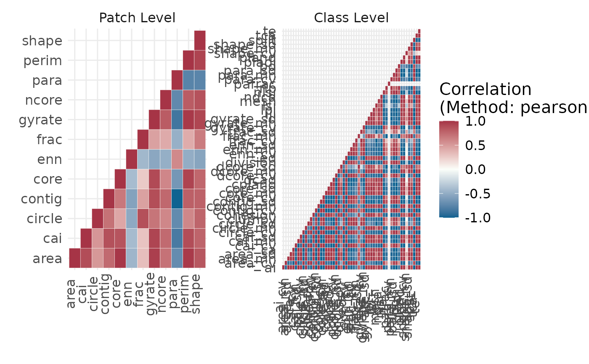

Show correlation
show_correlation( data, method = "pearson", diag = TRUE, labels = FALSE, vjust = 0, text_size = 15 )
| data | Tibble with results of as returned by the landscapemetrics package. |
|---|---|
| method | Type of correlation. See |
| diag | If FALSE, values on the diagonal will be NA and not plotted. |
| labels | If TRUE, the correlation value will be added as text. |
| vjust | Will be passed on to ggplot2 as vertical justification of x-axis text. |
| text_size | Text size of the plot. |
ggplot
The functions calculates the correlation between all metrics. In order to calculate correlations, for the landscape level more than one landscape needs to be present. All input must be structured as returned by the landscapemetrics package.
#> Warning: Please use 'check_landscape()' to ensure the input data is valid.#> Warning: Class 1: PAFRAC = NA for class with < 10 patches#> Warning: Class 3: PAFRAC = NA for class with < 10 patchesshow_correlation(data = metrics, method = "pearson")if (FALSE) { metrics <- calculate_lsm(landscape, what = c("patch", "class"))#' correlations <- calculate_correlation(metrics) show_correlation(data = correlations, method = "pearson") }